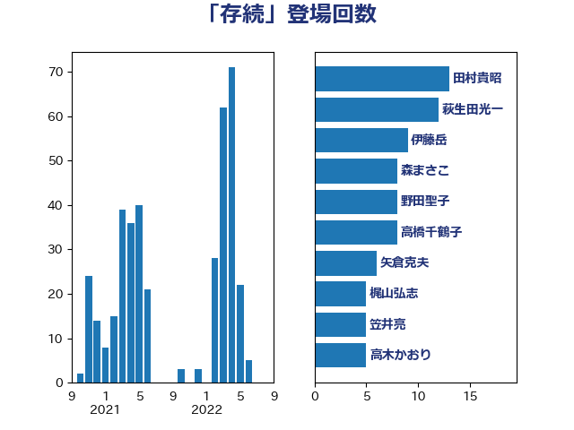

単語「存続」

| 田村貴昭 | 日本共産党 | 13 回 |
| 萩生田光一 | 自由民主党 | 12 回 |
| 伊藤岳 | 日本共産党 | 9 回 |
| 森まさこ | 自由民主党 | 8 回 |
| 野田聖子 | 自由民主党 | 8 回 |
| 高橋千鶴子 | 日本共産党 | 8 回 |
| 矢倉克夫 | 公明党 | 6 回 |
| 梶山弘志 | 自由民主党 | 5 回 |
| 笠井亮 | 日本共産党 | 5 回 |
| 高木かおり | 日本維新の会 | 5 回 |
| 塩村あやか | 立憲民主党 | 4 回 |
| 安達澄 | 無所属 | 4 回 |
| 室井邦彦 | 日本維新の会 | 4 回 |
| 山田美樹 | 自由民主党 | 4 回 |
| 斉藤鉄夫 | 公明党 | 4 回 |
| 玉木雄一郎 | 国民民主党 | 4 回 |
| 西銘恒三郎 | 自由民主党 | 4 回 |
| 勝部賢志 | 立憲民主党 | 3 回 |
| 堀内詔子 | 自由民主党 | 3 回 |
| 宮崎政久 | 自由民主党 | 3 回 |
| 山井和則 | 立憲民主党 | 3 回 |
| 末松信介 | 自由民主党 | 3 回 |
| 末松義規 | 立憲民主党 | 3 回 |
| 石井章 | 日本維新の会 | 3 回 |
| 石川香織 | 立憲民主党 | 3 回 |
| 菊田真紀子 | 立憲民主党 | 3 回 |
| 西岡秀子 | 国民民主党 | 3 回 |
| 赤嶺政賢 | 日本共産党 | 3 回 |
| 進藤金日子 | 自由民主党 | 3 回 |
| 道下大樹 | 立憲民主党 | 3 回 |
| 野上浩太郎 | 自由民主党 | 3 回 |
| 高見康裕 | 自由民主党 | 3 回 |
| 下村博文 | 自由民主党 | 2 回 |
| 中野英幸 | 自由民主党 | 2 回 |
| 井上信治 | 自由民主党 | 2 回 |
| 務台俊介 | 自由民主党 | 2 回 |
| 吉田統彦 | 立憲民主党 | 2 回 |
| 尾身朝子 | 自由民主党 | 2 回 |
| 岸真紀子 | 立憲民主党 | 2 回 |
| 川田龍平 | 立憲民主党 | 2 回 |
| 平木大作 | 公明党 | 2 回 |
| 庄子賢一 | 公明党 | 2 回 |
| 杉久武 | 公明党 | 2 回 |
| 松沢成文 | 日本維新の会 | 2 回 |
| 柴田巧 | 日本維新の会 | 2 回 |
| 河野義博 | 公明党 | 2 回 |
| 浜田聡 | NHK党 | 2 回 |
| 浮島智子 | 公明党 | 2 回 |
| 牧山ひろえ | 立憲民主党 | 2 回 |
| 田村まみ | 国民民主党 | 2 回 |
| 田村憲久 | 自由民主党 | 2 回 |
| 田村智子 | 日本共産党 | 2 回 |
| 石井正弘 | 自由民主党 | 2 回 |
| 福島伸享 | 無所属 | 2 回 |
| 稲津久 | 公明党 | 2 回 |
| 美延映夫 | 日本維新の会 | 2 回 |
| 自見はなこ | 自由民主党 | 2 回 |
| 芳賀道也 | 国民民主党 | 2 回 |
| 豊田俊郎 | 自由民主党 | 2 回 |
| 金子恭之 | 自由民主党 | 2 回 |
| 青木愛 | 立憲民主党 | 2 回 |
| たがや亮 | れいわ新選組 | 1 回 |
| 下野六太 | 公明党 | 1 回 |
| 中根一幸 | 自由民主党 | 1 回 |
| 伊藤渉 | 公明党 | 1 回 |
| 古川俊治 | 自由民主党 | 1 回 |
| 古川元久 | 国民民主党 | 1 回 |
| 吉川ゆうみ | 自由民主党 | 1 回 |
| 吉川沙織 | 立憲民主党 | 1 回 |
| 吉田久美子 | 公明党 | 1 回 |
| 吉良よし子 | 日本共産党 | 1 回 |
| 和田政宗 | 自由民主党 | 1 回 |
| 坂本哲志 | 自由民主党 | 1 回 |
| 城井崇 | 立憲民主党 | 1 回 |
| 堀井学 | 自由民主党 | 1 回 |
| 堤かなめ | 立憲民主党 | 1 回 |
| 塩川鉄也 | 日本共産党 | 1 回 |
| 大島敦 | 立憲民主党 | 1 回 |
| 大野泰正 | 自由民主党 | 1 回 |
| 小池晃 | 日本共産党 | 1 回 |
| 小沼巧 | 立憲民主党 | 1 回 |
| 小泉進次郎 | 自由民主党 | 1 回 |
| 小野泰輔 | 日本維新の会 | 1 回 |
| 小野田紀美 | 自由民主党 | 1 回 |
| 山下芳生 | 日本共産党 | 1 回 |
| 山口壯 | 自由民主党 | 1 回 |
| 山田賢司 | 自由民主党 | 1 回 |
| 岩田和親 | 自由民主党 | 1 回 |
| 岬麻紀 | 日本維新の会 | 1 回 |
| 岸田文雄 | 自由民主党 | 1 回 |
| 川崎ひでと | 自由民主党 | 1 回 |
| 市村浩一郎 | 日本維新の会 | 1 回 |
| 平口洋 | 自由民主党 | 1 回 |
| 平沼正二郎 | 自由民主党 | 1 回 |
| 斎藤嘉隆 | 立憲民主党 | 1 回 |
| 本村伸子 | 日本共産党 | 1 回 |
| 杉尾秀哉 | 立憲民主党 | 1 回 |
| 松原仁 | 立憲民主党 | 1 回 |
| 柚木道義 | 立憲民主党 | 1 回 |
| 柳ヶ瀬裕文 | 日本維新の会 | 1 回 |
| 榛葉賀津也 | 国民民主党 | 1 回 |
| 横沢高徳 | 立憲民主党 | 1 回 |
| 橋本岳 | 自由民主党 | 1 回 |
| 沢田良 | 日本維新の会 | 1 回 |
| 泉健太 | 立憲民主党 | 1 回 |
| 湯原俊二 | 立憲民主党 | 1 回 |
| 片山さつき | 自由民主党 | 1 回 |
| 田中英之 | 自由民主党 | 1 回 |
| 石井苗子 | 日本維新の会 | 1 回 |
| 石川大我 | 立憲民主党 | 1 回 |
| 神谷裕 | 立憲民主党 | 1 回 |
| 福山哲郎 | 立憲民主党 | 1 回 |
| 穀田恵二 | 日本共産党 | 1 回 |
| 紙智子 | 日本共産党 | 1 回 |
| 細田健一 | 自由民主党 | 1 回 |
| 舟山康江 | 国民民主党 | 1 回 |
| 船橋利実 | 自由民主党 | 1 回 |
| 葉梨康弘 | 自由民主党 | 1 回 |
| 角田秀穂 | 公明党 | 1 回 |
| 谷田川元 | 立憲民主党 | 1 回 |
| 赤池誠章 | 自由民主党 | 1 回 |
| 赤羽一嘉 | 公明党 | 1 回 |
| 足立康史 | 日本維新の会 | 1 回 |
| 足立敏之 | 自由民主党 | 1 回 |
| 近藤昭一 | 立憲民主党 | 1 回 |
| 重徳和彦 | 立憲民主党 | 1 回 |
| 野田国義 | 立憲民主党 | 1 回 |
| 金子恵美 | 立憲民主党 | 1 回 |
| 金村龍那 | 日本維新の会 | 1 回 |
| 長友慎治 | 国民民主党 | 1 回 |
| 長妻昭 | 立憲民主党 | 1 回 |
| 阿部知子 | 立憲民主党 | 1 回 |
| 青山大人 | 立憲民主党 | 1 回 |
| 音喜多駿 | 日本維新の会 | 1 回 |
| 須藤元気 | 無所属 | 1 回 |
| 高橋はるみ | 自由民主党 | 1 回 |
| 高橋光男 | 公明党 | 1 回 |